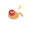

01 立秋 Lìqiū 公历时间 8月7~9日 节气内涵 暑去秋来，万物始敛 🌤️气候特点 立秋并非立刻入凉，尚有末伏余热，俗称"秋老虎"，日间燥热、晨昏渐凉，雨水慢慢减少，空气趋于干爽。 🌾物候三候 一候 · 凉风至 秋风送爽，暑气消退 二候 · 白露降 晨起水汽凝于草木 三候 · 寒蝉鸣 秋蝉畏寒，鸣声凄切 🏮传统民俗 🥩 贴秋膘夏日苦夏消瘦，立秋吃肉进补 🍉 啃秋吃瓜啃桃，祛除暑气 🍠时令美食 🥘红烧肉贴秋膘经典肉食 🍉秋瓜啃秋解暑润燥 🍑鲜桃立秋尝鲜果 📜节气诗词 《立秋》 刘翰 乳鸦啼散玉屏空，一枕新凉一扇风。睡起秋声无觅处，满阶梧桐月明中。
02 处暑 Chǔshǔ 公历时间8月22~24日 节气内涵暑气终止，出暑入秋 🌤️气候特点 伏天彻底结束，气温稳步下降，燥热消散，昼暖夜凉。 🌾物候三候 一候 · 鹰乃祭鸟老鹰开始大量捕猎鸟类 二候 · 天地始肃天地万物开始凋零 三候 · 禾乃登五谷成熟，秋收开始 🏮传统民俗 🚣放河灯水灯随波漂流，缅怀先人 🦆吃鸭子处暑吃鸭，滋阴润燥 🍠时令美食 🍲老鸭汤滋阴清热，秋日滋补 🍇葡萄处暑时节正当熟 🫐菱角水乡时令佳品 📜节气诗词 《处暑后风雨》 仇远 疾风驱急雨，残暑扫除空。因识炎凉态，都来顷刻中。
03 白露 Báilù 公历时间9月7~9日 节气内涵晨露凝白，秋燥渐盛 🌤️气候特点 昼夜温差拉大，夜间降温水汽凝结成白色露珠，秋燥明显。 🌾物候三候 一候 · 鸿雁来大雁从北方飞来南方 二候 · 玄鸟归燕子飞回南方过冬 三候 · 群鸟养羞百鸟储备食物过冬 🏮传统民俗 🍶饮白露酒白露时节酿酒，温中散寒 🍵白露茶白露采摘的秋茶，清香甘醇 🍠时令美食 🍶白露米酒温中散寒，传统佳酿 🥬莲藕清热生津，秋令鲜蔬 🍯银耳羹滋阴润肺，秋燥良方 📜节气诗词 《白露》 杜甫 白露团甘子，清晨散马蹄。圃开连石树，船渡入江溪。
04 秋分 Qiūfēn 公历时间9月22~24日 节气内涵昼夜均分，金秋丰收 🌤️气候特点 昼夜等长，此后昼短夜长，气温匀速走低，全国秋收。 🌾物候三候 一候 · 雷始收声秋分后不再打雷 二候 · 蛰虫坯户虫子开始封堵洞口 三候 · 水始涸河流湖泊水量减少 🏮传统民俗 🥚竖鸡蛋秋分竖蛋，趣味民俗 🙏祭秋月秋分祭月，感恩丰收 🍠时令美食 🦀大闸蟹秋分蟹肥，膏满黄丰 🍅脆柿子秋日甜蜜，柿柿如意 🍰桂花糕金桂飘香，软糯甜美 📜节气诗词 《秋分后顿凄冷有感》 陆游 今年秋气早，木落不待黄。
05 寒露 Hánlù 公历时间10月8~9日 节气内涵露气转寒，深秋已至 🌤️气候特点 气温大幅下降，露水带寒意，北方近初霜。 🌾物候三候 一候 · 鸿雁来宾最后一批大雁南飞 二候 · 雀入大水为蛤雀鸟隐没，蛤蜊出现 三候 · 菊有黄华菊花盛开，满地金黄 🏮传统民俗 🌼赏菊寒露赏菊，秋日雅事 🍵饮寒露茶寒露时节饮茶，润燥养生 🍠时令美食 🌰板栗寒露板栗，香甜软糯 🍠红薯暖胃充饥，秋日佳品 🍂菊花酒重阳佳节，饮菊延寿
06 霜降 Shuāngjiàng 公历时间10月23~24日 节气内涵气凝为霜，秋尽入冬 🌤️气候特点 气温骤降，开始结霜，深秋落幕，万物预备越冬。 🌾物候三候  一候 · 豺乃祭兽豺狼开始陈列猎物 二候 · 草木黄落草木枯黄，落叶纷飞 三候 · 蜇虫咸俯蛰虫全部躲入洞穴 🏮传统民俗 🥩吃羊肉霜降进补，羊肉暖身 🌼赏菊晚菊傲霜，秋末雅赏 🍠时令美食 🍲羊肉汤温阳散寒，霜降滋补 🥕萝卜霜降萝卜，赛过梨子 🍅霜降柿经霜柿子，格外甘甜 📜节气诗词 《霜降》 吕本中 九月霜降后，残暑扫无踪。